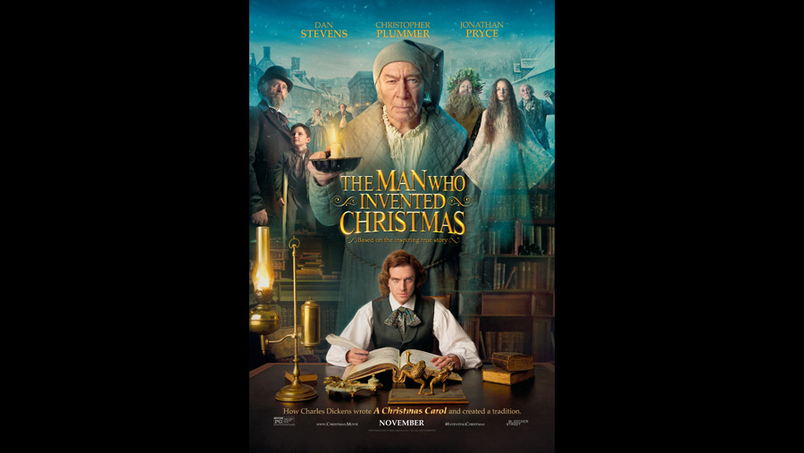

| Character | Actor |
|---|---|
| Ebenezer Scrooge | Christopher Plummer |
| Charles Dickens | Dan Stevens |
| Young Charles Dickens | Ely Solan |
| John Dickens, Charles Dickens' father | Jonathan Pryce |
| John Leech, an illustrator | Simon Callow |
| Jacob Marley | Donald Sumpter |
| Mrs. Fisk | Miriam Margolyes |
| Kate Dickens | Morfydd Clark |
| John Forster / Ghost of Christmas Present | Justin Edwards |
| William Makepeace Thackeray | Miles Jupp |
| Edward Chapman | Ian McNeice |
| Mr. Grimsby | Bill Paterson |
| Mr. Fezziwig | John Henshaw |
| Mrs. Fezziwig | Annette Badland |
| Tara / Ghost of Christmas Past | Anna Murphy |
| Walter Dickens | Jasper Hughes-Cotter |
| Scam Artist | Eddie Jackson |
| Italian Workman | Neil Slevin |
| Warren's Foreman | Paul Kealyn |
| Mamie Dickens | Aleah Lennon |
| Elizabeth Dickens | Ger Ryan |
| Tart | Valeria Bandino |
| Role | Person |
|---|---|
| Director | Bharat Nalluri |
| Screenplay | Susan Coyne |
A 2017 biographical drama film based on the book of the same name by Les Standiford. It stars Dan Stevens, Christopher Plummer and Jonathan Pryce. The plot follows Charles Dickens (Stevens) at the time when he wrote A Christmas Carol, and how Dickens' fictional character Ebenezer Scrooge (Plummer) was influenced by his real-life father, John Dickens (Pryce).